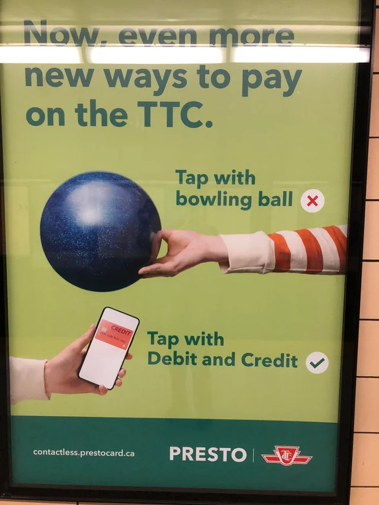

Selected Design Item: TTC PRESTO contactless payment poster (tap with debit and credit)  TTC PRESTO poster about new ways to pay on the TTC.
Short Description Design elements, relationships, and gestalt principles Visual hierarchy: Big headline first, then the two “tap with…” examples, then branding at the bottom. Your eye follows that order automatically. Contrast: The green background makes the dark text readable, and the red X versus green check is instant meaning. Scale: The bowling ball is oversized and funny-looking, so it grabs attention fast. The phone is smaller, but it feels more realistic and “doable.” Alignment and structure: Everything is neatly stacked and spaced, so it reads like instructions, not like a busy ad. Proximity: Each object sits close to its matching text and symbol, so the message groups itself without effort. Similarity: Both examples use the same “Tap with…” phrasing, same layout, same symbol style, so you understand it’s a comparison. Figure-ground: Clean background, clear foreground objects. No clutter, so the message is the whole point. Gestalt closure (light): Even with minimal text, the X and check complete the meaning. Wrong versus right. What it's trying to appeal to, or convince you to do Convenience: It's selling the idea that paying is simple now, tap and go. Confidence: The check mark signals “this is the correct method,” so you feel less unsure at the fare reader. Behavior change: It pushes riders to use debit/credit tapping instead of guessing, asking, or doing something incorrect. Attention through humor: The bowling ball example is exaggerated on purpose, so you look, then you learn the real option.